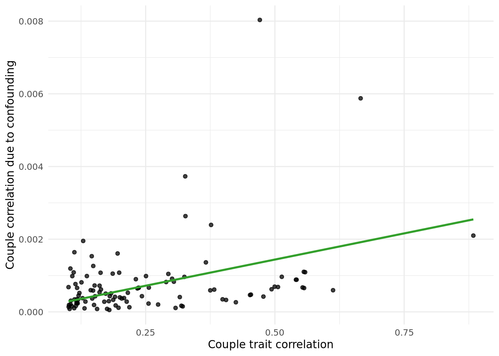
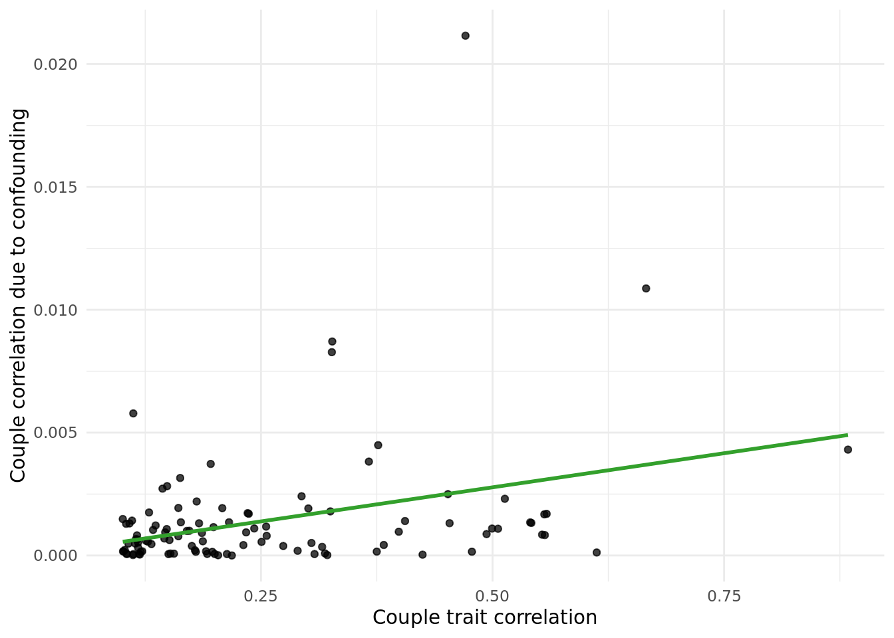

Update Meeting: 25-10-2021
jennysjaarda
2021-10-20
Last updated: 2021-10-26
Checks: 7 0
Knit directory: proxyMR/
This reproducible R Markdown analysis was created with workflowr (version 1.6.2). The Checks tab describes the reproducibility checks that were applied when the results were created. The Past versions tab lists the development history.
Great! Since the R Markdown file has been committed to the Git repository, you know the exact version of the code that produced these results.
Great job! The global environment was empty. Objects defined in the global environment can affect the analysis in your R Markdown file in unknown ways. For reproduciblity it's best to always run the code in an empty environment.
The command set.seed(20210602) was run prior to running the code in the R Markdown file. Setting a seed ensures that any results that rely on randomness, e.g. subsampling or permutations, are reproducible.
Great job! Recording the operating system, R version, and package versions is critical for reproducibility.
Nice! There were no cached chunks for this analysis, so you can be confident that you successfully produced the results during this run.
Great job! Using relative paths to the files within your workflowr project makes it easier to run your code on other machines.
Great! You are using Git for version control. Tracking code development and connecting the code version to the results is critical for reproducibility.
The results in this page were generated with repository version 48b6256. See the Past versions tab to see a history of the changes made to the R Markdown and HTML files.
Note that you need to be careful to ensure that all relevant files for the analysis have been committed to Git prior to generating the results (you can use wflow_publish or wflow_git_commit). workflowr only checks the R Markdown file, but you know if there are other scripts or data files that it depends on. Below is the status of the Git repository when the results were generated:
Ignored files:
Ignored: .Rhistory
Ignored: .Rproj.user/
Ignored: _targets/
Ignored: analysis/_site.yml_cp
Ignored: analysis/bgenie_GWAS/
Ignored: analysis/data_setup/
Ignored: analysis/download_Neale_list.csv
Ignored: analysis/meetings2.html
Ignored: analysis/process_Neale.out
Ignored: analysis/traitMR/
Ignored: data/Neale_SGG_directory_12_07_2021.csv
Ignored: data/Neale_SGG_directory_15_07_2021.csv
Ignored: data/PHESANT_file_directory_05_10_2021.txt
Ignored: data/UKBB_pheno_directory_05_10_2021.csv
Ignored: data/processed/
Ignored: data/raw/
Ignored: output/figures/
Ignored: output/tables/traitMR/
Ignored: proxyMR_comparison.RData
Ignored: proxyMR_figure_data.RData
Ignored: proxymr_100_clustermq.out
Ignored: proxymr_101_clustermq.out
Ignored: proxymr_102_clustermq.out
Ignored: proxymr_103_clustermq.out
Ignored: proxymr_104_clustermq.out
Ignored: proxymr_105_clustermq.out
Ignored: proxymr_106_clustermq.out
Ignored: proxymr_107_clustermq.out
Ignored: proxymr_108_clustermq.out
Ignored: proxymr_109_clustermq.out
Ignored: proxymr_10_clustermq.out
Ignored: proxymr_110_clustermq.out
Ignored: proxymr_111_clustermq.out
Ignored: proxymr_112_clustermq.out
Ignored: proxymr_113_clustermq.out
Ignored: proxymr_114_clustermq.out
Ignored: proxymr_115_clustermq.out
Ignored: proxymr_116_clustermq.out
Ignored: proxymr_117_clustermq.out
Ignored: proxymr_118_clustermq.out
Ignored: proxymr_119_clustermq.out
Ignored: proxymr_11_clustermq.out
Ignored: proxymr_120_clustermq.out
Ignored: proxymr_121_clustermq.out
Ignored: proxymr_122_clustermq.out
Ignored: proxymr_123_clustermq.out
Ignored: proxymr_124_clustermq.out
Ignored: proxymr_125_clustermq.out
Ignored: proxymr_126_clustermq.out
Ignored: proxymr_127_clustermq.out
Ignored: proxymr_128_clustermq.out
Ignored: proxymr_129_clustermq.out
Ignored: proxymr_12_clustermq.out
Ignored: proxymr_130_clustermq.out
Ignored: proxymr_131_clustermq.out
Ignored: proxymr_132_clustermq.out
Ignored: proxymr_133_clustermq.out
Ignored: proxymr_134_clustermq.out
Ignored: proxymr_135_clustermq.out
Ignored: proxymr_136_clustermq.out
Ignored: proxymr_137_clustermq.out
Ignored: proxymr_138_clustermq.out
Ignored: proxymr_139_clustermq.out
Ignored: proxymr_13_clustermq.out
Ignored: proxymr_140_clustermq.out
Ignored: proxymr_14_clustermq.out
Ignored: proxymr_15_clustermq.out
Ignored: proxymr_16_clustermq.out
Ignored: proxymr_17_clustermq.out
Ignored: proxymr_18_clustermq.out
Ignored: proxymr_19_clustermq.out
Ignored: proxymr_1_clustermq.out
Ignored: proxymr_20_clustermq.out
Ignored: proxymr_21_clustermq.out
Ignored: proxymr_22_clustermq.out
Ignored: proxymr_23_clustermq.out
Ignored: proxymr_24_clustermq.out
Ignored: proxymr_25_clustermq.out
Ignored: proxymr_26_clustermq.out
Ignored: proxymr_27_clustermq.out
Ignored: proxymr_28_clustermq.out
Ignored: proxymr_29_clustermq.out
Ignored: proxymr_2_clustermq.out
Ignored: proxymr_30_clustermq.out
Ignored: proxymr_31_clustermq.out
Ignored: proxymr_32_clustermq.out
Ignored: proxymr_33_clustermq.out
Ignored: proxymr_34_clustermq.out
Ignored: proxymr_35_clustermq.out
Ignored: proxymr_36_clustermq.out
Ignored: proxymr_37_clustermq.out
Ignored: proxymr_38_clustermq.out
Ignored: proxymr_39_clustermq.out
Ignored: proxymr_3_clustermq.out
Ignored: proxymr_40_clustermq.out
Ignored: proxymr_41_clustermq.out
Ignored: proxymr_42_clustermq.out
Ignored: proxymr_43_clustermq.out
Ignored: proxymr_44_clustermq.out
Ignored: proxymr_45_clustermq.out
Ignored: proxymr_46_clustermq.out
Ignored: proxymr_47_clustermq.out
Ignored: proxymr_48_clustermq.out
Ignored: proxymr_49_clustermq.out
Ignored: proxymr_4_clustermq.out
Ignored: proxymr_50_clustermq.out
Ignored: proxymr_51_clustermq.out
Ignored: proxymr_52_clustermq.out
Ignored: proxymr_53_clustermq.out
Ignored: proxymr_54_clustermq.out
Ignored: proxymr_55_clustermq.out
Ignored: proxymr_56_clustermq.out
Ignored: proxymr_57_clustermq.out
Ignored: proxymr_58_clustermq.out
Ignored: proxymr_59_clustermq.out
Ignored: proxymr_5_clustermq.out
Ignored: proxymr_60_clustermq.out
Ignored: proxymr_61_clustermq.out
Ignored: proxymr_62_clustermq.out
Ignored: proxymr_63_clustermq.out
Ignored: proxymr_64_clustermq.out
Ignored: proxymr_65_clustermq.out
Ignored: proxymr_66_clustermq.out
Ignored: proxymr_67_clustermq.out
Ignored: proxymr_68_clustermq.out
Ignored: proxymr_69_clustermq.out
Ignored: proxymr_6_clustermq.out
Ignored: proxymr_70_clustermq.out
Ignored: proxymr_71_clustermq.out
Ignored: proxymr_72_clustermq.out
Ignored: proxymr_73_clustermq.out
Ignored: proxymr_74_clustermq.out
Ignored: proxymr_75_clustermq.out
Ignored: proxymr_76_clustermq.out
Ignored: proxymr_77_clustermq.out
Ignored: proxymr_78_clustermq.out
Ignored: proxymr_79_clustermq.out
Ignored: proxymr_7_clustermq.out
Ignored: proxymr_80_clustermq.out
Ignored: proxymr_81_clustermq.out
Ignored: proxymr_82_clustermq.out
Ignored: proxymr_83_clustermq.out
Ignored: proxymr_84_clustermq.out
Ignored: proxymr_85_clustermq.out
Ignored: proxymr_86_clustermq.out
Ignored: proxymr_87_clustermq.out
Ignored: proxymr_88_clustermq.out
Ignored: proxymr_89_clustermq.out
Ignored: proxymr_8_clustermq.out
Ignored: proxymr_90_clustermq.out
Ignored: proxymr_91_clustermq.out
Ignored: proxymr_92_clustermq.out
Ignored: proxymr_93_clustermq.out
Ignored: proxymr_94_clustermq.out
Ignored: proxymr_95_clustermq.out
Ignored: proxymr_96_clustermq.out
Ignored: proxymr_97_clustermq.out
Ignored: proxymr_98_clustermq.out
Ignored: proxymr_99_clustermq.out
Ignored: proxymr_9_clustermq.out
Ignored: renv/library/
Ignored: renv/staging/
Untracked files:
Untracked: Rplots.pdf
Untracked: analysis/meetings2.Rmd
Unstaged changes:
Modified: analysis/AM_MR_summary.Rmd
Modified: analysis/couple_selection.Rmd
Modified: output/tables/define_Neale_categories.csv
Modified: output/tables/define_Neale_categories_filled.csv
Modified: renv.lock
Note that any generated files, e.g. HTML, png, CSS, etc., are not included in this status report because it is ok for generated content to have uncommitted changes.
These are the previous versions of the repository in which changes were made to the R Markdown (analysis/update_meeting_25_10_2021.Rmd) and HTML (docs/update_meeting_25_10_2021.html) files. If you've configured a remote Git repository (see ?wflow_git_remote), click on the hyperlinks in the table below to view the files as they were in that past version.
| File | Version | Author | Date | Message |
|---|---|---|---|---|
| Rmd | 48b6256 | Jenny Sjaarda | 2021-10-26 | wflow_rename("analysis/update_meeting_28_10_2021.Rmd", "analysis/update_meeting_25_10_2021.Rmd") |
1 Progress update.
1.1 Impact of geography.
Wanted to assess impact of geography on couple trait correlation. Investigated this by using both genetic PCs and birth coordinates.
1.1.1 PC impact.
Tested the following:
- cor(PC_i,PC_p) for each PC (i.e. within couple PC correlation).
- cor(X,PC) for all PCs.
Next, I calculated the correlation due to counfounding as cor(X,PC)^2*cor(PC_i,PC_p) values, and plotted them against the raw cor(X_i,X_p) values.

The table below gives the data in the plot above:
outcome_descriptioncorresponds to the trait.trait_couple_corris the correlation ofoutcome_descriptionin couples.corr_due_to_confounding_allcorresponds to the formula:cor(X,PC)^2*cor(PC_i,PC_p), summed across all PCs.
1.1.2 Coordiante impact.
Performed the same analysis as above but replacing PCs with North and East birth co-ordinates (data field 129 and 130, respectively).

The table below gives the data in the plot above:
outcome_descriptioncorresponds to the trait.trait_couple_corris the correlation ofoutcome_descriptionin couples.corr_due_to_confounding_allcorresponds to the formula:cor(X,PC)^2*cor(PC_i,PC_p), summed across both coorindates.
1.2 Compairing paths from \(X_i \rightarrow Y_p\).
We performed two analyses to compare \(\rho\), \(\gamma\) and \(\omega\):
- No adjustment in \(Y_i \rightarrow Y_p\) MR.
- Adjustment for effects on \(X_i\) in \(Y_i \rightarrow Y_p\) MR, MVMR model as follows: \(Y_p \sim Y_i + X_i\) (IVs were a combination of all \(X\) and \(Y\) IVs, pruned at standard parameters using 1000G European data).

| Version | Author | Date |
|---|---|---|
| 529020f | jennysjaarda | 2021-09-24 |
Broad overview of results are shown in the figure below.
- Without adjustment.

- With adjustment.

Going forward, we will just use the adjusted results.
1.2.1 Exploring the difference between \(\rho\) and \(\gamma\).
In general, \(\rho\) is significantly larger that \(\gamma\), meaning that \(X_i \rightarrow Y_p\) favors paths where assortative mating is through \(X\) rather than \(Y\). This makes a lot of biological and intuitive sense. In other words, exposures are passed from index to partner, rather than outcomes.
A summary of the linear model of \(\rho\) vs \(\gamma\), forced through the intercept, is below.
Call:
lm(formula = y ~ x + 0, data = fig_data)
Residuals:
Min 1Q Median 3Q Max
-0.38531 -0.02515 0.00292 0.03829 0.54599
Coefficients:
Estimate Std. Error t value Pr(>|t|)
x 0.60512 0.01442 41.96 <0.0000000000000002 ***
---
Signif. codes: 0 '***' 0.001 '**' 0.01 '*' 0.05 '.' 0.1 ' ' 1
Residual standard error: 0.07834 on 987 degrees of freedom
Multiple R-squared: 0.6408, Adjusted R-squared: 0.6404
F-statistic: 1761 on 1 and 987 DF, p-value: < 0.00000000000000022The corresponding figure is below. The blue line includes only BF-significant \(\rho\) and \(\gamma\), where the green line includes all points (analagous to the linear model above).

1.2.2 Exploring the difference between \(\omega\) and [\(\rho\) and \(\gamma\)].
A few observations:
- In general, \(\omega\) is significantly larger than both \(\rho\) and \(\gamma\), as shown in the figures below.
- On the other hand, when we sum \(\rho\) and \(\gamma\), \(\omega\) is in general lower than the sum.
- There are a number of instances where \(\omega\) is significantly smaller than the sum &rightarrow not as interesting? But what does this mean? That we didn't have power in the \(\omega\) (i.e diagonal) MR to capture the relationship that is likely only going through the either \(\rho\) or \(\gamma\) (or a sum of the two)?
- There are a few cases where \(\omega\) is significantly larger than the sum. See below for details.


Call:
lm(formula = y ~ x + 0, data = fig_data)
Residuals:
Min 1Q Median 3Q Max
-0.65813 -0.03940 -0.00337 0.03210 1.99081
Coefficients:
Estimate Std. Error t value Pr(>|t|)
x 0.64639 0.01175 55.03 <0.0000000000000002 ***
---
Signif. codes: 0 '***' 0.001 '**' 0.01 '*' 0.05 '.' 0.1 ' ' 1
Residual standard error: 0.1064 on 987 degrees of freedom
Multiple R-squared: 0.7542, Adjusted R-squared: 0.754
F-statistic: 3029 on 1 and 987 DF, p-value: < 0.00000000000000022A summary of the cases where \(\omega\) is significantly larger or smaller than the sum of \(\rho\) and \(\gamma\) are shown in the two tables below (taking absolute values of each).
1.3 Next steps.
- In the \(Y_i \rightarrow Y_p\) MR, rather than performing a MVMR (\(Y_p \sim Y_i + X_i\)), try in a two step process as follows:
- Calculate the effect of \(Y_p\) without effects of \(X_i\) on \(Y_p\) as: \(Y_{resid} = Y_p - \omega*X_I\).
- Run MR with the residualized \(Y\) as: \(Y_{resid} \sim Y_i\)
Question: What is the corresponding SEs on \(Y_{resid}\)?
- Check for cases of reverse causation in the same-person MR.
- Remove SNPs were the effect is significantly larger on the outcome than the exposure.
- In the results including both sexes, meta-analyze at the SNP-level rather than the MR level (note that right now the two horizontal, same person MRs in the DAG above are different because they are sex specific. I then meta-analyze \(\omega\), \(\gamma\) and \(\rho\) as the final step).
- Calculate the variance of \(\rho + \gamma\) as: \(2 * cor(\rho, \gamma) * SE_{\gamma} * SE{\rho}\), i.e. include the extra-term of 2*correlation.
2 PolyMR.
- Finished discussion points.
- Waiting on Jonathan to add bibtex file before adding my references.
- Haven't done a summary on CATE - who was going to do that?
- Question: Why is there often an inflection point around the (0,0) point? Is this an effect of standardization?
sessionInfo()R version 4.1.0 (2021-05-18)
Platform: x86_64-pc-linux-gnu (64-bit)
Running under: CentOS Linux 7 (Core)
Matrix products: default
BLAS: /data/sgg2/jenny/bin/R-4.1.0/lib64/R/lib/libRblas.so
LAPACK: /data/sgg2/jenny/bin/R-4.1.0/lib64/R/lib/libRlapack.so
locale:
[1] en_CA.UTF-8
attached base packages:
[1] stats graphics grDevices datasets utils methods base
other attached packages:
[1] cowplot_1.1.1 kableExtra_1.3.4 knitr_1.33 DT_0.18.1
[5] forcats_0.5.1 stringr_1.4.0 dplyr_1.0.7 purrr_0.3.4
[9] readr_1.4.0 tidyr_1.1.3 tibble_3.1.2 ggplot2_3.3.4
[13] tidyverse_1.3.1 targets_0.5.0.9001 workflowr_1.6.2
loaded via a namespace (and not attached):
[1] nlme_3.1-152 fs_1.5.0 lubridate_1.7.10 webshot_0.5.2
[5] httr_1.4.2 rprojroot_2.0.2 tools_4.1.0 backports_1.2.1
[9] bslib_0.3.0 utf8_1.2.1 R6_2.5.0 DBI_1.1.1
[13] mgcv_1.8-35 colorspace_2.0-1 withr_2.4.2 tidyselect_1.1.1
[17] processx_3.5.2 compiler_4.1.0 git2r_0.28.0 cli_2.5.0
[21] rvest_1.0.0 xml2_1.3.2 labeling_0.4.2 sass_0.4.0
[25] scales_1.1.1 callr_3.7.0 systemfonts_1.0.2 digest_0.6.27
[29] rmarkdown_2.11.2 svglite_2.0.0 pkgconfig_2.0.3 htmltools_0.5.2
[33] dbplyr_2.1.1 fastmap_1.1.0 highr_0.9 htmlwidgets_1.5.3
[37] rlang_0.4.11 readxl_1.3.1 rstudioapi_0.13 jquerylib_0.1.4
[41] generics_0.1.0 farver_2.1.0 jsonlite_1.7.2 crosstalk_1.1.1
[45] magrittr_2.0.1 Matrix_1.3-3 Rcpp_1.0.6 munsell_0.5.0
[49] fansi_0.5.0 lifecycle_1.0.0 stringi_1.6.2 whisker_0.4
[53] yaml_2.2.1 grid_4.1.0 promises_1.2.0.1 crayon_1.4.1
[57] lattice_0.20-44 haven_2.4.1 splines_4.1.0 hms_1.1.0
[61] ps_1.6.0 pillar_1.6.1 igraph_1.2.6 codetools_0.2-18
[65] reprex_2.0.0 glue_1.4.2 evaluate_0.14 data.table_1.14.0
[69] renv_0.13.2-62 modelr_0.1.8 vctrs_0.3.8 httpuv_1.6.1
[73] cellranger_1.1.0 gtable_0.3.0 assertthat_0.2.1 xfun_0.24
[77] broom_0.7.7 later_1.2.0 viridisLite_0.4.0 ellipsis_0.3.2